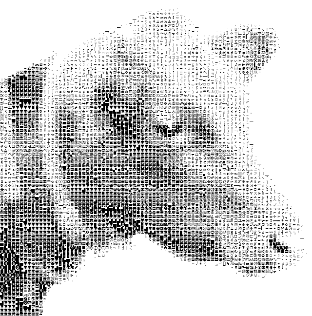
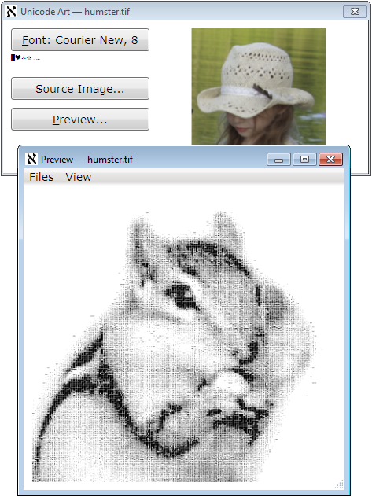
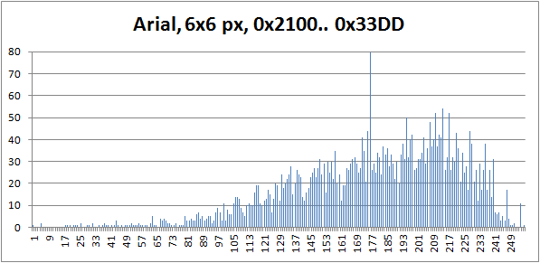
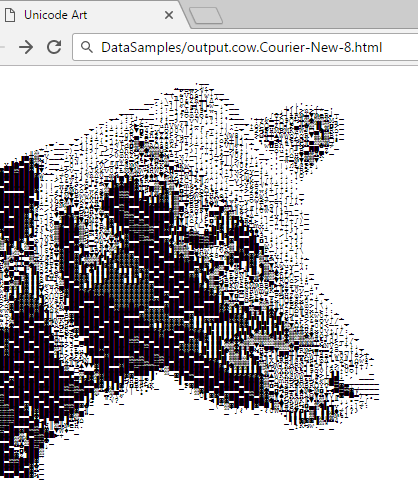
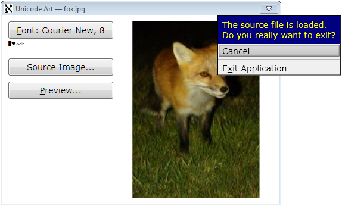
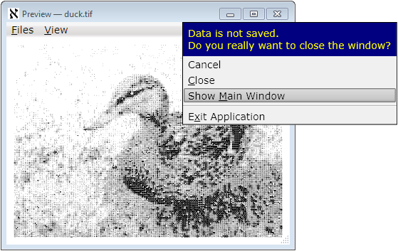

Epigraph:
I would rather be adorned by beauty of character than jewels
- Plautus
Contents
Introduction
On this nice spring day, it’s a great time to have some fun.
Compared to ASCII art, its Unicode analog is easier for the automatic generation; at the same time, the result can look more impressive, due to better tonal set of the characters — there are so many of them in Unicode!
Human visual perception is an amazingly complicated thing. It presents a lot of subtle problems of the visual presentation of everything. On the other hand, the power of human perception is dramatically underestimated. Accordingly, the preparation of the photographs or other images for the conversion into a good-looking Unicode Art form takes some artistry.
At the same time, the application offered in the present article helps to get some basic experience pretty quickly, because, with almost every small reasonably contrast and clear photograph on input, it produces quite a recognizable rendition of the character-composed image. Let’s see how it is done.
Operation
The operation of the application is quite simple. The user selects an input image file and the font used for rendering the output image. “Preview” renders the image in a separate window, which can later be saved in one of three forms: as an image file, plain text file, or HTML.
The preview can be switched between two modes: in a Viewbox showing the entire image scaled to fit the window size, or “original pixel size” viewed in a ScrollViewer. With “original pixel size”, if the font size used is, for example, 12 pixels, each character is presented pixel to pixel, taking exactly 12x12 pixels on a screen.
The input image should be prepared with some care. If the image size combined with the font size is too big, the rendering process may take too much time. However, it can be aborted separately per each preview window. The preparation of the input image for a really nice rendition will need some practice. Font parameters make the difference, but the tonal range of the image and its clarity are even more critical. From the first attempts, it’s not so easy to predict how the results will look.
That’s why some conversions can produce somewhat surprising results:

To preserve the original aspect ratio, the characters representing pixels are always rendered in a square area with the square side equal to the font size. As a result of this design, the font does not have to be monospace: in all cases, a character glyph, if its measures are different, is placed in the center of this square. That can reduce the apparent character densities, but the output images can still be good.
Research
It took some effort to study how different font families, metrics, and character repertoires can render the dynamic range of some images.
To map a subset of characters and choose characters used to represent some pixel value, we first need to collect statistics on the “brightness” of each character glyph in a certain subset of characters. Such “brightness” (quotation marks intended) can be defined as the average value of the bit in a glyph rendered in black color in a white background area of the size S x S, where S is the font size. The value calculated in this way does not correctly reflect the human perception of the “color intensity”, which is essentially logarithmic, but it is acceptable in the given situation; in all cases, it defines the partial ordering of the characters by brightness.
The target pixel format is the grayscale with 8 bits per pixel, which is more than enough, taking into account the limited tonal range of the set of characters. Even with this format, 0.. 255 tones, there are not enough pixels to cover it. So, we can map a given character set to these 256 tones, normalizing the mapping so the “darkest” character would be mapped to 0, and the blank space character — to 255. The problem is: not all values even in this 0.. 255 range would correspond to some character in the mapping. Apparently, there are too many “light” characters, with a bad deficiency in “dark” ones. The ratio of the pixel values corresponding to some character in the given set can be considered as one of the possible “quality” characteristics of the combination of the font parameters and character set.
This is how the mapping is calculated:
for (int index = 0; index < brightnessValues.Length; ++index) {
char symbol = list[index];
double symbolBrightness = brightnessValues[index];
double dValue = (symbolBrightness - min) / (1 - min) * (byte.MaxValue);
body[(int)dValue].Add(symbol);
}
Here, min is the minimal character glyph “brightness” found, and body is the array[0.. 255] of lists of characters. After this step, the missing output pixel values (elements of the body array) are filled by interpolation. Please see the source file “CharacterRepertoire.cs” for more detail.
Amazingly, the calculation of the “brightness” of the character does not require a big font size. Indeed, the system character rendering method already does a good job mapping a small glyph using gray tones, so most of the averaging work is already done. Surprisingly, my measurements revealed that near-optimum quality (as defined above) is observed for the font size 6 to 8 pixels, for most fonts.
This is how the character glyph “brightness” histogram looks for one of the near-optimum situations:

(In this picture, the maximum value at the input pixel value 175 goes out of scale; the actual number of characters mapped to this pixel value is 1062. Apparently, “almost all” characters have very close glyph density values, which falls in the range of the pixel value 175 on the 0.. 255 tonal scale. This is how the fonts are designed. Font artists consider the ability to produce a uniformly looking density of text line as one of the major virtues of the art. This is one of the reasons why I’ve chosen my range of the character code points shown on the histogram: it has many “special” characters, such as block elements, box drawing, mathematical symbols, dingbats, and so on. Those are the characters of untypical glyph densities.)
It turned out that this calculation is fast enough, in comparison with the rendering of the input image. At first, I wanted to calculate the character repertoire mapping in advance and store it in data to be used on every run of the application, but it does not seem to be so important for the performance.
Image rendering is relatively slow: the reasonably small source images take few seconds to render, but the big images I tried take hours. Remember, the size of the output file grows proportionally to the font size, squared.
Initially, the character repertoire is mapped to the tonal range corresponding to the pixel values 0.. 255. This calculation is done only once in the lifetime of the application and then reused. Strictly speaking, the calculation should be performed separately for each font, because, potentially, it may affect the ordering of the characters by “brightness”, but I did not notice any considerable difference. On my system, this part of calculations adds a couple of seconds on the first run. Any reasonable-size input file rendering takes more time.
That’s why it’s important to use threading.
Threading
First of all, the output image is rendered as a System.Windows.Media.Imaging.BitmapSource. The runtime type used as a source for showing the image in the preview is System.Windows.Media.Imaging.RenderTargetBitmap. Even though the rendering requires the use of System.Windows.Media.DrawingContext, the use of direct rendering has prohibitively poor performance of the preview, in this particular situation, for pretty obvious reasons.
That’s why RenderTargetBitmap is used. First of all, it is needed to produce the image file when the user wants to save it. At the same time, the instance of this type is used permanently (per the “Preview” window) for the display of the rendered image, as the Image.Source.
Each Preview window uses a separate thread. This is not a very typical situation where the number of the process threads is unlimited, but it reasonable for this application. It’s important that the user can choose to render another image while waiting for the rendering threads started before, with the possibility of aborting them if it takes too long.
The implementation is fundamentally based on the concept of thread wrapper which I started to explain in my articles Many Questions Answered At Once: Interactive Animated Graphics with Forms, Thread Wrapper for Modern C++, and Conveyor Thread Wrapper for Modern C++. This is a kind of ad hoc wrapper for the present application:
class ThreadWrapper {
internal ThreadWrapper(
PreviewWindow presentation,
Image image,
Main.Renderer renderer, BitmapImage source,
Typeface typeface, int fontSize,
Dispatcher dispatcher) {
this.presentation = presentation;
this.image = image;
this.typeface = typeface;
this.fontSize = fontSize;
this.renderer = renderer;
this.source = source;
source.Freeze();
this.dispatcher = dispatcher;
}
internal void Start() {
thread = new Thread(Body);
thread.TrySetApartmentState(ApartmentState.STA);
thread.Start();
}
internal void Abort() {
thread.Abort();
}
internal void Join() {
thread.Join();
}
void Body() {
try {
ImageSource imageSource = renderer.Render(source, typeface, fontSize, 0);
dispatcher.Invoke(new System.Action(() => {
image.Source = imageSource;
image.Width = source.Width * fontSize;
image.Height = source.Height * fontSize;
presentation.menu.Visibility = Visibility.Visible;
presentation.SetTarget(RenderTarget.scaled);
}));
} catch (ThreadAbortException) {
} catch (System.Exception e) {
dispatcher.Invoke(
new System.Action<Exception>((Exception exception) => {
presentation.ShowException(exception);
}), e);
}
}
Thread thread;
Dispatcher dispatcher;
Main.Renderer renderer;
BitmapImage source;
PreviewWindow presentation;
Image image;
Typeface typeface;
int fontSize;
}
Note that the thread can be asynchronously aborted, which sometimes faces fierce opposition from other developers. It is too big and a complicated topic to cover here, so I’ll confine the discussion with just the claim: I do it in a safe way specific to each application.
One important point about threading is thread synchronization. In the present application, there are two points where we need to pass data between the two threads, the UI thread and a thread rendering each preview instance. First, the input image reference is passed to the image-rendering thread. At the end, the rendered ImageSource is passed to the UI thread for the presentation, as a property Image.Source. These two transitions are fundamentally based on the method Freeze: see System.Windows.Freezable.Freeze.
HTML Rendering
At first glance, it would be likely to expect that text and HTML presentation of the Unicode art would be easy to achieve. However, I managed to screw up the first attempt. Here are the missing points:
- Some characters included in the character repertoire might be not supported by a particular font. In bitmap rendering, it won’t create a big problem, because all characters are rendered in the same fixed area on the output bitmap. In HTML such characters may still be rendered and take some space, but even with monospace fonts the horizontal space, the width can be different, which causes a horizontal shift of the text lines.
- Accidentally, some characters can act as end-of-line characters. With HTML
pre element, it will cause the line break, possibly in the middle of a stride. - Accidentally, some sequences of characters can match HTML character entities.
First two problems should be solved when the character repertoire is built. It’s important to filter out some characters automatically. This is the fragment of CharacterRepertoire.Build:
internal void Build(Typeface typeface) {
GlyphTypeface glyphTypeface;
bool success = typeface.TryGetGlyphTypeface(out glyphTypeface);
var map = glyphTypeface.CharacterToGlyphMap;
System.Predicate<ushort> isCharacterSupported = (codePoint) => {
ushort glyphIndexDummy;
return map.TryGetValue(codePoint, out glyphIndexDummy);
};
CharacterList list = new CharacterList();
DoubleList brightnessList = new DoubleList();
foreach (var range in DefinitionSet.charset)
for (ushort codePoint = range.first;
codePoint <= range.last;
++codePoint)
{
if (!isCharacterSupported(codePoint)) continue;
char character = System.Char.ConvertFromUtf32(codePoint)[0];
if (char.IsSeparator(character) ||
char.IsControl(character))
continue;
list.Add(character);
brightnessList.Add(GetBrightness(character, typeface));
}
};
Besides, there are quite obvious problems, first of all, the aspect ratio. Apparently, if the font chosen family has variable-size characters, the image will be heavily deformed — even though the fall-back family is monospace, if some more specialized family was successfully used by the “Unicode Art” application, the same family will be found on the same system and used for the in-browser rendering. There is nothing we can do about it, but how to deal with monospace font families? This is another subtle aspect of HTML rendering. This is the solution:
internal void SaveToHtml(
string fileName,
string originalFileName,
Typeface typeface, int fontSize)
{
if (originalFileName == null) originalFileName = string.Empty;
int xMax = unicodePixels.GetUpperBound(1);
int yMax = unicodePixels.GetUpperBound(0);
StringBuilder sb = new StringBuilder();
for (var indexY = 0; indexY <= yMax; ++indexY) {
for (var indexX = 0; indexX <= xMax; ++indexX)
sb.Append(unicodePixels[indexY, indexX]);
if (indexY < yMax) sb.Append(System.Environment.NewLine);
}
GlyphTypeface glyphTypeface;
typeface.TryGetGlyphTypeface(out glyphTypeface);
System.Collections.Generic.IDictionary<ushort, double>
advanceHeights = glyphTypeface.AdvanceHeights;
System.Collections.Generic.IDictionary<ushort,
double> advanceWidths = glyphTypeface.AdvanceWidths;
double aspect = 1;
double width, height;
ushort testCharachter = DefinitionSet.fullSizeSampleCharacter;
if (advanceWidths.TryGetValue(testCharachter, out width) &&
advanceHeights.TryGetValue(testCharachter, out height))
aspect = width / height;
string html = string.Format(
Resources.Resources.HtmlFormat,
originalFileName,
1,
aspect,
typeface.FontFamily.ToString(),
System.Web.HttpUtility.HtmlEncode(sb.ToString()));
using (StreamWriter writer =
new StreamWriter(fileName, false, Encoding.UTF8)) {
writer.WriteLine(html);
}
}
Note that the 3rd problem is solved by using HtmlEncode. Now, let’s look at the rendered HTML file:
<html>
<head>
<title>Unicode Art</title>
<meta name="generator" content="UnicodeArt.exe" />
<meta name="description"
content="Generated from file: input.cow.png; ..." />
<meta http-equiv="Content-Type" content="text/html; charset=utf-8" />
<style type="text/css">
pre {
font-size: 1em;
line-height: 0.748933577087142em;
font-family: "Courier New", monospace;
}
</style>
</head>
<body>
<pre><!--</pre>
</body>
</html>
This is the result of rendering:

(Unicode Art images rendered from identical original images may look different because different character repertoires were used.)
HTML browsers have some problems with such images. From the code sample shown above, one can see that 5 parameters are inserted in the HTML file format (see the source file “Resources/HtmlFormat.html”): original file name, the values for CSS style properties font-size (always 1 in em units), line-height, and font-family, and then the formatted stream of characters. These parameters are ultimately calculated from the font face chosen in the main window of the application.
But what about the aspect ratio? The answer is: it is “almost correct”. One can easily observe where the aspect ratio is a bit off by using the standard Web browser Zoom feature: zooming makes the aspect ratio flowing off, to a certain extent, depending on the zoom levels.
At the same time, HTML presentation is very convenient due to this zoom, as the glyphs of the image are rendered on the fly as vector graphics, so we can quickly observe separate characters or overall view.
New Style Elements
A while ago, I put forward some more or less fresh style elements. We often need to defer closing of the window, which may or may not exit the whole application, most usually, to give the user the choice to save some work or cancel the changes. In WPF, it is done using the overridden method System.Windows.Window.OnClosing or in the handler of the event System.Windows.Window.Closing.
And who told that it should be those modal dialog boxes? Why those dialog boxes take up so much space? What is the useful function of those ugly buttons (no matter how modern they look) with all those shadows, borders, and spacing between those decorative elements? Who says that all these visual clues really help the user to understand what should be done on the request of the application? Can’t it have a much simpler look and produce less buzz? Here is how I pictured it:


This is just the message and menu of choices, customizable, theme-aware, visually associated with the window-closing element of the window’s non-client area (top right “=x=” icon, for current Windows style). It simply disappears (which is equivalent to “Cancel”) when it loses focus or escaped, safely leaving things as is when the user does not make a choice, which can be considered as a softer and nicer form of modality. This behavior is safe and stable in response to any accidents and requires less user input activity. All manipulations can be done with a mouse or keyboard, or any combination of both.
In this particular application, the choice of action is not requested for the main window if no input image is loaded. For a preview window, the choice is not requested if the user saved the image in both bitmap form and at least one of the textual forms: plain text of HTML. Therefore, the option to save a file is not shown in the closing menu, but such an option can be used in other applications.
The implementation of this style and behavior is tricky and interesting enough and may take a separate article.
The present implementation of this idea, being quite reliable, is still not fully universal or customizable, or convenient for the application developers, so it could be considered as a working prototype. For further detail, please see the source files “ClosingWindowControl.*” and “TheApplication.cs”.
Application and Window Icons
Unfortunately, default C# project templates effectively encourage bad development practice: the application icon is created independently from the window icons. Even if the icon is the same, most developers don’t reuse them; and this is totally wrong because it violates the fundamental and very important in practice SPOT principle. There is no obvious way of using the single source icon for both purposes.
In the present application, with the use of my own WPF project template, I demonstrate the known simple and reliable solution to this problem.
First of all, the developer needs to create an icon file, one or more. This file can be included in a .resx file and used as a resource for one or more objects, some windows, or the application (I would highly recommend the development of icons using some 3rd-party tool and included in the project as a separate file, used in a .docx file through the “Add existing file…” option.)
The first user of such resource should be the application. To make a reusable resource embedded in an application and an application icon, we need an explicit entry-point method (Main). For the environment needed to have such a method in a WPF application, please see the source file “TheApplication.cs”. This is how the entry-point method may look:
[STAThread]
static void Main(string[] args) {
using (var iconStream = new System.IO.MemoryStream()) {
TheApplication app = new TheApplication();
UnicodeArt.Resources.Resources.IconMain.Save(iconStream);
iconStream.Seek(0, System.IO.SeekOrigin.Begin);
app.ApplicationIcon =
System.Windows.Media.Imaging.BitmapFrame.Create(iconStream);
app.Run();
}
}
This code fragment assumes that the file “Resources.xres” is added to the project directory resource, and the default namespace is “UnicodeArt” — it produces the auto-generated name of the resource variable shown above. To obtain the name of the appropriate icon, simply find it in the auto-generated file, in this example, “Resources.Designer.cs”.
Assuming that at least one icon, the icon of the main window, should be the same as the application icon, I assign the application window icon when it is created in the class TheApplication:
protected override void OnStartup(StartupEventArgs e) {
MainWindow = new Ui.MainWindow();
MainWindow.Title = ProductName;
MainWindow.Icon = ApplicationIcon;
MainWindow.Show();
}
If some other windows need the same icon, they can copy the reference from the main window. Alternatively, it can be taken as TheApplication.Current.ApplicationIcon, assuming the TheApplication.Current to be the TheApplication singleton analogous to Application.Current, and ApplicationIcon is the property of this type.
Compatibility and Build
As the code is based on WPF, I used the first platform version decently compatible with WPF — Microsoft.NET v.3.5. Correspondingly, I provided a solution and a project for Visual Studio 2008. I’ve done it intentionally, to cover all the readers who could use WPF. Later .NET versions will be supported; later versions of Visual Studio can automatically upgrade solution and project files.
In fact, Visual Studio is not required for the build. The code can be built as a batch, by using the provided batch file “build.bat”. If your Windows installation directory is different from the default, the build will still work. If the .NET installation directory is different from the default one, please see the content of this batch file and the comment in its first line — the next line can be modified to get the build.
Instead of Conclusions: Aleph Numbers
Why the application icon is the Hebrew letter aleph, ℵ?
First of all, this letter, inherited from Phoenician 'Ālep, symbolizes the concept of the alphabet and the word “alphabet”, originating, through Greek ἀλφάβητος, from the first two Phoenician letters, 'Ālep and Bēt, dating back to the Phoenicians, if not earlier. So, the word “alphabet” can be interpreted as “ox house” :-).
Also, in mathematics, this character denotes aleph numbers representing the cardinalities of infinite sets. It suggests the idea of an “infinite” number of possible Unicode Art works, but only figuratively speaking: everything played on a computer is always some finite set, just because any computer is merely a finite-state machine :-).
I will gladly respond to all kinds of informative criticism and consider suggestions on the topic.
Licensing Notes
In addition to The Code Project Open License:
All the images are original, created from scratch by the author of the article.
At the same time, the character glyphs used in some of the images can be copyrighted by the developers of the fonts used. Eventually, royalty payment can be requested by the owners of the proprietary copyrighted fonts from any user of the present application, as well as from any authors of any textual rendered work (printed or printable books, articles, application UI, finance reports, and the like). :-)